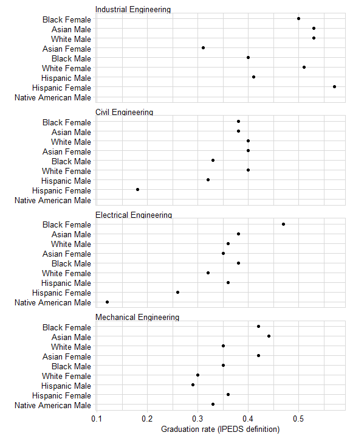

In the US, the Integrated Postsecondary Education Data System (IPEDS) defines “graduation rate” as the fraction of full-time, first-time, degree/certificate-seeking undergraduate students in a particular year who complete the program in which they matriculate within 150 percent of normal time, i.e., 6 years for a 4-year program (“IPEDS Survey Components” 2018).
The IPEDS definition excludes students who begin college part-time, who enroll mid-year, and who transfer from one institution to another. The American Council on Education (ACE) estimates that this definition of graduation rate may exclude up to 60% of students at 4-year institutions (Cook and Hartle 2011).
So why use the metric? As Cook and Hartle state,
So given their complexity, do college graduation rates really matter? In fact, they do because in the eyes of the public, policy makers, and the media, they provide a clear, simple, and logical—if often misleading—number.
So with these caveats in mind, we provide the tools for determining program graduation rates per the IPEDS definition.
Packages used:
In this article, we show you how to use midfieldr functions to compute program stickiness. Our workflow is:
The Selecting groups of programs vignette describes the process for obtaining the program codes and names for four engineering programs: Civil, Electrical, Industrial, and Mechanical. The output of that vignette is saved as a midfieldr case data set, case_program_group. You may
The case data are loaded with midfieldr. Simply assign the data to an object such as program_group.
# information saved from an earlier vignette program_group <- case_program_group
Examine the result: there are a total of 12 CIP codes for these programs. We have all six columns from the cip dataset and the program column we added using cip6_select().
# check the result program_group #> # A tibble: 12 x 3 #> cip6 cip6name program #> <chr> <chr> <chr> #> 1 140801 Civil Engineering, General Civil Engineering #> 2 140802 Geotechnical Engineering Civil Engineering #> 3 140803 Structural Engineering Civil Engineering #> 4 140804 Transportation and Highway Engineering Civil Engineering #> 5 140805 Water Resources Engineering Civil Engineering #> 6 140899 Civil Engineering, Other Civil Engineering #> 7 141001 Electrical, Electronics and Communications Enginee~ Electrical Engine~ #> 8 141003 Laser and Optical Engineering Electrical Engine~ #> 9 141004 Telecommunications Engineering Electrical Engine~ #> 10 141099 Electrical, Electronics and Communications Enginee~ Electrical Engine~ #> 11 141901 Mechanical Engineering Mechanical Engine~ #> 12 143501 Industrial Engineering Industrial Engine~
We use starter_filter() to collect all students starting in the programs we are studying. starter_filter() has one required argument:
series atomic character vector of 6-digit CIP codesThe series argument in this case is an atomic vector of the 6-digit CIP codes in our program_group. The function uses these codes to search midfieldstudents, the default reference data set.
program_series <- program_group[["cip6"]] %.>% unique(.) %.>% sort(.) %>% print(.) #> [1] "140801" "140802" "140803" "140804" "140805" "140899" "141001" "141003" #> [9] "141004" "141099" "141901" "143501"
Extract all students from midfieldstudents starting in these programs.
students <- starter_filter(series = program_series) %.>% glimpse(.) #> Rows: 5,026 #> Columns: 2 #> $ id <chr> "MID25792087", "MID25796088", "MID25799551", "MID25799578", "M... #> $ cip6 <chr> "141901", "140801", "141001", "141001", "140801", "141901", "1...
When studying engineering programs, we must account for the imputed starting majors of students at institutions with a required first year engineering (FYE) program. For the data in this package, the imputed values are saved in the case_fye data set. Use starter_filter() again with case_fye as the optional reference argument.
fye <- starter_filter(series = program_series, reference = case_fye) %.>% glimpse(.) #> Rows: 3,843 #> Columns: 2 #> $ id <chr> "MID25896490", "MID25916711", "MID25977012", "MID25864996", "M... #> $ cip6 <chr> "141001", "141001", "141901", "141001", "141001", "143501", "1...
Then bind the two data frames.
started <- bind_rows(students, fye) %.>% glimpse(.) #> Rows: 8,869 #> Columns: 2 #> $ id <chr> "MID25792087", "MID25796088", "MID25799551", "MID25799578", "M... #> $ cip6 <chr> "141901", "140801", "141001", "141001", "140801", "141901", "1...
Confirm that the CIPs are the ones we expect and that no student ID has been inadvertently duplicated.
Next we gather the graduates in our program group, but restrict ourselves to students who graduate in the same program in which they started.
We use grad_filter() to search the midfielddegrees dataset using the programs listed in program_series.
# count students graduating from programs graduated <- grad_filter(series = program_series) %.>% print(.) #> # A tibble: 4,676 x 2 #> id cip6 #> <chr> <chr> #> 1 MID25783178 143501 #> 2 MID25783197 140801 #> 3 MID25783441 140801 #> 4 MID25783491 141001 #> 5 MID25783912 143501 #> # ... with 4,671 more rows
Open the help page by running
?grad_filter()Again, only students who graduate from the program in which they start are counted when computing graduation rate per the IPEDS definition. Thus we keep only those graduates whose IDs appear among the starters.
Before joining, we first change the cip6 variable to start and grad in their respective data frames.
# started <- rename(started, start = cip6) # graduated <- rename(graduated, grad = cip6)
In the join, we keep all starters and we keep only those graduates whose ID is also in the starters.
start_series <- started[["id"]] %.>% glimpse(.) #> chr [1:8869] "MID25792087" "MID25796088" "MID25799551" "MID25799578" ... collapse_series <- stringr::str_c(start_series, collapse = "|") graduated <- dplyr::filter( graduated, stringr::str_detect(id, collapse_series) ) %.>% print(.) #> # A tibble: 3,380 x 2 #> id cip6 #> <chr> <chr> #> 1 MID25783441 140801 #> 2 MID25783491 141001 #> 3 MID25783912 143501 #> 4 MID25784334 140801 #> 5 MID25784418 140801 #> # ... with 3,375 more rows
Join race and sex to both data frames, and the program names.
# assign the variables for grouping grouping_variables <- c("program", "race", "sex") # count students started <- started %.>% race_sex_join(.) %.>% left_join(., program_group, by = "cip6") %.>% group_summarize(., grouping_variables, "start" = n()) %.>% print(.) #> # A tibble: 63 x 4 #> program race sex start #> <chr> <chr> <chr> <int> #> 1 Civil Engineering Asian Female 15 #> 2 Civil Engineering Asian Male 48 #> 3 Civil Engineering Black Female 48 #> 4 Civil Engineering Black Male 101 #> 5 Civil Engineering Hispanic Female 17 #> # ... with 58 more rows graduated <- graduated %.>% race_sex_join(.) %.>% left_join(., program_group, by = "cip6") %.>% group_summarize(., grouping_variables, "grad" = n()) %.>% print(.) #> # A tibble: 59 x 4 #> program race sex grad #> <chr> <chr> <chr> <int> #> 1 Civil Engineering Asian Female 6 #> 2 Civil Engineering Asian Male 18 #> 3 Civil Engineering Black Female 18 #> 4 Civil Engineering Black Male 33 #> 5 Civil Engineering Hispanic Female 3 #> # ... with 54 more rows
And join the two data frames
# tally stickiness, by group grad_rate <- left_join(started, graduated, by = grouping_variables) %.>% filter(., start > 5) %.>% mutate(., rate = round(grad / start, 2)) %.>% print(.) #> # A tibble: 48 x 6 #> program race sex start grad rate #> <chr> <chr> <chr> <int> <int> <dbl> #> 1 Civil Engineering Asian Female 15 6 0.4 #> 2 Civil Engineering Asian Male 48 18 0.38 #> 3 Civil Engineering Black Female 48 18 0.38 #> 4 Civil Engineering Black Male 101 33 0.33 #> 5 Civil Engineering Hispanic Female 17 3 0.18 #> # ... with 43 more rows
Graph
# prepare data for graph grad_rate_mw <- grad_rate %.>% filter(., !race %in% c("Unknown", "International", "Other")) %.>% filter(., !sex %in% "Unknown") %.>% mutate(., race_sex = str_c(race, sex, sep = " ")) %.>% seplyr::select_se(., c("program", "race_sex", "rate")) %.>% multiway_order(.) # graph ggplot(grad_rate_mw, aes(x = rate, y = race_sex)) + facet_wrap(~program, ncol = 1, as.table = FALSE) + geom_point(na.rm = TRUE) + labs(x = "Graduation rate (IPEDS definition)", y = "") + theme_midfield()

setting value
version R version 4.0.0 (2020-04-24)
os Windows 10 x64
system x86_64, mingw32
ui RTerm
language (EN)
collate English_United States.1252
ctype English_United States.1252
tz America/New_York
date 2020-06-15
package * version date lib source
midfielddata * 0.1.0 2020-06-06 [] local
midfieldr * 1.0.0.9001 2020-06-15 [] local
seplyr * 0.8.8 2020-05-24 [] CRAN (R 4.0.0)
tidyverse * 1.3.0 2019-11-21 [] CRAN (R 4.0.0)
* dependent packages not listedCook, Bryan, and Terry W. Hartle. 2011. “Why Graduation Rates Matter—and Why They Don’t.” Edited by American Council on Education. http://www.acenet.edu/the-presidency/columns-and-features/Pages/Why-Graduation-Rates-Matter%E2%80%94and-Why-They-Don%E2%80%99t.aspx.
“IPEDS Survey Components.” 2018. National Center for Education Statistics (NCES); https://nces.ed.gov/ipeds/use-the-data/survey-components/outcome-measures.